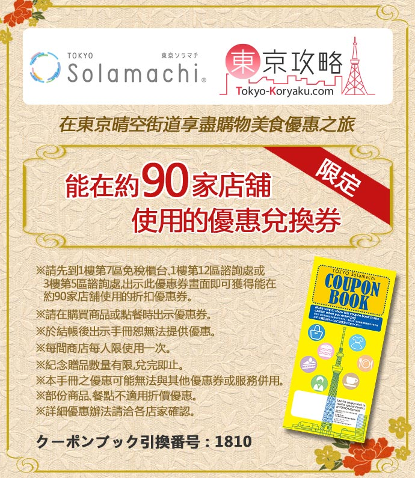

地圖
JR 東京近郊路線圖
http://www.jreast.co.jp/tc/info/map_a4ol.pdf
地鐵路線圖
http://www.tokyometro.jp/station/index.html
花的錢
9/8 機票 (07:40 台北松山 > 11:45 東京羽田機場) $18625
Hotel Sardonyx Ueno (9/8 15:00 後入住， 9/12 10:00 前退房) $12177
湖上苑 (9/12 14:00 後入住， 9/13 10:00 前退房) 25,800日圓 大約 $7086
Hotel Sardonyx Ueno (9/13 15:00 後入住， 9/15 10:00 前退房) $5317
Tokyo Subway 48hr Ticket $637
日光交通票 $3612
Skyliner $1221
9/15 機票 (19:40 東京成田機場 > 22:35 桃園) $10024
迪士尼門票 $7162
換日幣 $45000
計程車 $1365
9/8 (六) 台北松山 -> 日本羽田 -> 上野 -> 淺草 -> 晴空塔 -> 上野
- 飛機
松山 -> 羽田 (出發: 2018年 9月 8日 07:40, 抵達: 2018年 9月 8日 11:45)
東京單軌電車到 JR 滨松町再轉 JR 線到上野 (東京單軌電車＆山手線內優惠票 ¥500)

上野
買 SUICA - ¥2500
JR上野站中央改札口直走就是離飯店最近的廣小路口，過馬路後沿著大馬路走就可以看到飯店。
Hotel Sardonyx Ueno
淺草 - [Tokyo Subway 48hr Ticket] 地鐵銀座線上野廣小路到淺草
7 號出口東武淺草 1F 淺草旅遊服務中心兌換日光票 NIKKO PASS All Area (四日券 ¥4520)
- 淺草雷門
- Silk Pudding - 布丁
- 仲見世通
- 浅草メンチ - 炸豬肉餅
- 豊福 – 黑毛和牛咖哩麵包
- 淺草寺
- 花月堂 - 菠蘿麵包
- 龜十 - 銅鑼燒
- 淺草文化觀光中心


晴空塔 - [Tokyo Subway 48hr Ticket] 地鐵淺草線淺草到押上
先到1樓第7區免稅櫃出示此優惠券畫面即可獲得能在約90家店舖使用的折扣優惠券。
- PRESS BUTTER SAND (東京晴空街道 2F 高塔庭院 28)
- 東京晴空戀巧克力波浪三層夾心餅乾 (東京晴空街道4F 天空小町內)
- 六厘舎 TOKYO 晴空塔6F
9/9 (日) 上野 -> 原宿 -> 澀谷 -> 六本木 -> 東京鐵塔 -> 上野
原宿 - [Tokyo Subway 48hr Ticket] 地鐵日比谷線到日比谷-H07 轉車 → 地鐵千代田線到明治神宮-C03
- 明治神宮
- GAP
- Calbee＋ 現炸洋芋片跟薯條
- 天丼
- Kiddy Land

澀谷 - [Tokyo Subway 48hr Ticket] 地鐵副都新線到澀谷-F16 八號出口
- 忠犬八公
- 丸井0101 - 7F 海賊王專賣店, 2F 女鞋品牌 velikok
- MUJI 無印良品
- Loft 日本人氣雜貨店
- SHIBUYA109 - 1F INGNI

六本木 - [Tokyo Subway 48hr Ticket] 地鐵半藏門線到青山一丁目站轉車 → 都營大江戶線前往六本木站 3 號出口
- 東京 City View
- NORTH TOWER - 阿夫利柚子拉麵店「AFURI」
東京鐵塔 - [Tokyo Subway 48hr Ticket] 日比谷線到神谷町站從1號出口步行7分鐘
9/10 (一) 迪士尼 Land
[Tokyo Subway 48hr Ticket] 地鐵日比谷線到八丁堀, [SUICA] JR 京葉線到舞濱
- 白雪公主冒險旅程 → 坐車兜風，真的是兜風
- 巨雷山 → 很快的車，心癢癢的微可怕
- 明日樂園舞台餐廳 → 覺得麥當勞比較好吃
- 幽靈公館 → 很酷特效，真的是幽靈的感覺
- 小熊維尼獵蜜記 → 坐車兜風，車會旋轉微暈
- 廚房馬車 → 烤大雞腿，比環球好吃
- 飛濺山 → 咻 ～ 全程精神緊繃，過得去的小恐怖
- 巴斯光年星際歷險 → 坐車雷射槍射擊大賽
- 怪獸電力公司「迷藏巡遊車」 → 有互動的坐車兜風
- 太空山 → 很漂亮，好險放在最後一個，好暈
9/11 (二) 迪士尼 Sea
[SUICA] 地鐵日比谷線到八丁堀 , [SUICA] JR 京葉線到舞濱
- 印第安納瓊斯冒險旅程：水晶骷髏頭魔宮 → 坐車兜風，強度適中的好設施
- 海底兩萬哩 → 真的有潛水艇的感覺，但密閉空間微暈
- 尚比尼兄弟餐廳 → 一般般，沒特別的感覺
- 地心探險之旅 → 過程漂亮，心癢癢的微可怕
- 海底巡遊艇：尼莫＆好友的海洋世界 → 看 4D 電影的感覺
- 玩具總動員瘋狂遊戲屋 → 坐車射擊遊戲，記得換手，好痠！
- 波多菲諾咖啡坊 → 烤雞腿好嫩好吃，但雞胸不好吃
- 驚魂古塔 → 驚悚指數破表 QQ
9/12 (三) 上野 -> 淺草 -> 日光
- 淺草 - [SUICA] 地鐵銀座線到淺草
日光 - [NIKKO PASS All Area] 特快 Revaty Kegon 11 AIZU 111 淺草 -> 東武日光 (出發 9:00, 抵達: 10:54)

公車詳細資訊:
http://www.tobu-bus.com/uploads/files/20180322_timetable.pdf
https://www.navitime.co.jp/bustransit/?orvStationCode=00078311from=busroute.result.orv
http://www.tobu.co.jp/foreign/pdf/nikkoBusRouteTcn.pdf走路路線時間圖:
http://www.okunikko-kougenhotel.com/hiking/hiking1.html低公害巴士時間表:
https://www.nikko-nsm.co.jp/web/wp-content/themes/nikko_nsm_01/bus/img/bus_time-table.pdf
- 赤沼 - 東武日光 2A 搭車 -> 赤沼-編號39 (出發: 11:10, 抵達: 12:14)
- 千手ヶ浜 - 赤沼搭低公害巴士 -> 千手ヶ浜 (出發: 13:10, 抵達: 13:40)
- 小田代原 - 千手ヶ浜搭低公害巴士 -> 赤沼 (出發: 14:50, 抵達: 15:20)
- 飯店 - 湖上苑 - 赤沼搭車 -> 船の駅中禪寺 (出發: 15:33, 抵達: 15:45)
9/13 (四) 日光 -> 淺草 -> 上野
[NIKKO PASS All Area]
- 船の駅中禪寺 (搭乘中禪寺湖機船前，請先至售票窗口領取乘船券)
船時間表: (http://www.chuzenjiko-cruise.com/timetable.hml)
船の駅中禪寺搭船一圈 (出發: 09:30, 抵達: 10:25)
- 湯ノ湖 - 船の駅中禪寺搭車 -> 湖畔前-編號45 (出發: 10:37, 抵達: 11:05)
- 湯滝 - 湯ノ湖散步過來
湯滝入口的湯瀑布 - 烤魚 - 元祖湯波そば~魚要 - 湯滝入口搭車 -> 日光郷土センター-編號5 (出發: 12:40 , 抵達: 13:48)
- 二社一寺 - 神橋站下車-編號7
東照宮 (¥1300) - 日光東武站 - 神橋站搭車 -> 日光東武站-編號2 (出發: 16:15 , 抵達: 16:19)
- 上野 - 特快 SPACIA Kegon 44 東武日光 -> 淺草 (出發: 17:23, 抵達: 19:15), [SUICA] 地鐵銀座線到上野
串揚げじゅらく 上野店 (JR上野駅 不忍口より徒歩２分)
9/14 (五) 上野 -> 築地 -> 銀座 -> 秋葉原 -> 上野
- 上野
買東京Metro地鐵24小時車票

- 築地 - [東京Metro地鐵24小時車票] 地鐵日比谷線到築地 1 出口
- 海鮮丼
- 哈密瓜
- 銀座 - [東京Metro地鐵24小時車票] 地鐵銀座線到銀座 A13 出口
- 伊東屋 itoya (A13往京橋方向步行約2分鐘)
- 木村家紅豆麵包 Kimuraya
- GU
- UNIQLO
- 東京晴空戀巧克力波浪三層夾心餅乾 (銀座Plaza58樓 1F)
- 幸福鬆餅 (ニューギンザビル10号館7階B号)
已預約 14:00 提前五分鐘到 (官網: https://magia.tokyo)

- 秋葉原 - [東京Metro地鐵24小時車票] 地鐵日比谷線到秋葉原 3 號出口
http://www.tokyo-koryaku.com/shopping/article/3974.html
- 秋葉原 RADIO 會館
- VOLKS 秋葉原 HOBBY 天國
- Sofmap AKIBA 4 號店 AMUSEMENT 館遊戲專賣店
- 買取販賣市場 Mulan 中央通店
- AKIBA 文化 ZONE
- LIBERTY 秋葉原 1 號店
- BIC CAMERA AKIBA
- 上野 - [東京Metro地鐵24小時車票] 地鐵日比谷線到仲御徒町
回飯店卸貨
上野 とんかつ山家 (炸豬排店)
9/15 (六) 上野 -> 東京車站 -> 上野 -> 成田 -> 桃園 -> 樹林
- 東京車站 - [SUICA] JR 到東京
- PRESS BUTTER SAND
- 上野 - [SUICA] JR 到上野
- 房家燒肉商業午餐
- 京城上野站
坐 Skyliner 到成田機場 T2 (40幾分鐘) - 須事先兌換車票
- 成田機場
成田 -> 桃園 (出發: 2018年 9月 15日 19:40, 抵達: 2018年 9月 15日 22:35)